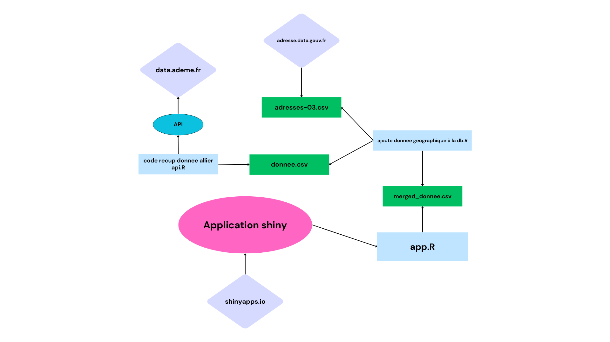

1. Introduction
L'application RShiny a pour objectif d'explorer les données des logements dans le département de l'Allier, en récupérant et visualisant ces informations à travers une interface interactive. Cette documentation explique le processus technique de mise en œuvre de l'application, y compris les flux de données, les scripts utilisés et la configuration nécessaire.
- Récupération des données depuis une API publique (données ADEME et adresses géographiques).
- Traitement et enrichissement des données avec des coordonnées géographiques.
- Affichage des données via une interface interactive avec cartes, graphiques et tableaux.
2. Prérequis
Pour faire fonctionner l'application, vous devez disposer des éléments suivants :
- R version 4.0 ou supérieure : Assurez-vous d'avoir une version récente de R installée.
- RStudio : Bien que facultatif, RStudio facilite le développement et l'exécution du projet.
- Packages R requis :
Les packages nécessaires peuvent être installés en utilisant la commande suivante :
install.packages(c("shiny", "httr", "ggplot2", "DT", "jsonlite"))
- shiny : Pour créer l'interface web interactive.
- httr : Pour effectuer des requêtes API et récupérer les données.
- ggplot2 : Pour générer des graphiques et des visualisations de données.
- DT : Pour afficher les données dans des tableaux interactifs.
- jsonlite : Pour lire et traiter les données JSON récupérées via l'API.
3. Installation des Packages
Avant de lancer l'application, il est essentiel d'installer les packages R suivants :
- Shiny : Interface utilisateur de l'application.
- HTTR : Gestion des requêtes API pour récupérer les données.
- GGPlot2 : Création des graphiques pour visualiser les informations récupérées.
- DT : Tables interactives pour afficher les données de manière dynamique.
- jsonlite : Chargement et manipulation des données JSON issues de l'API.
Utilisez cette commande pour installer tous les packages en une seule fois :
install.packages(c("shiny", "httr", "ggplot2", "DT", "jsonlite"))
4. Flux de Données (Workflow)
Voici le processus détaillé du flux de données dans l'application :
- Récupération des données : Le script
code_recup_donnee_allier_api.R effectue une requête à l'API data.ademe.fr pour récupérer les informations sur les logements.
- Ajout des données géographiques : Les coordonnées sont enrichies en utilisant le fichier
adresses-03.csv provenant de adresse.data.gouv.fr. Le script ajoute_donnee_geographique.R gère cette étape.
- Création du fichier final : Un fichier CSV
merged_donnee.csv est créé et contient les données complètes (logements + coordonnées).
- Visualisation : L'application Shiny est lancée via
app.R, affichant les données sous forme de graphiques, de tableaux interactifs et de cartes géographiques.
5. Lancer l'Application
Pour démarrer l'application, ouvrez RStudio et exécutez la commande suivante :
shiny::runApp("App.R")
Une fois l'application lancée, vous aurez accès à une interface web interactive avec :
- Des graphiques sur la répartition des logements par étiquette GES et année de construction.
- Une carte interactive montrant les logements sur une carte géographique.
- Des tableaux de données filtrables et interactifs.
6. Schéma de l'Architecture
Le schéma ci-dessous montre l'architecture technique de l'application :

Ce schéma montre les différentes étapes, de la récupération des données via l'API jusqu'à l'affichage des résultats dans l'application Shiny.
7. Détails des Scripts
- code recup donnee allier api.R : Récupère les données depuis l'API de
data.ademe.fr.
- ajoute donnee geographique à la db.R : Ajoute les données géographiques (latitude/longitude) provenant de
adresse.data.gouv.fr.
- app.R : Gère l'interface utilisateur et la logique Shiny pour afficher les données.
8. Packages Utilisés
- shiny : Interface web pour afficher les graphiques, tables et cartes interactives.
- httr : Envoi des requêtes à l'API pour récupérer les données des logements.
- ggplot2 : Génération de graphiques pour visualiser la répartition des données (par exemple, par étiquette GES, année de construction, etc.).
- DT : Création de tableaux interactifs permettant de filtrer et explorer les données récupérées.
- jsonlite : Conversion et manipulation des données JSON récupérées via l'API.